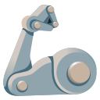

Make the important decisions, let AI do the rest.
Or permanent install: $ {{ installCmd }} {{ installLabel }}
The Framework turns AI agents into autonomous teammates that handle work end-to-end — while you stay in control of key decisions.
(Semi-)autonomously build anything from simple scripts and web apps to complex software (e.g. Telefunc Stream).
Stop losing time micro-managing agents — focus on what matters instead.
{{ p.desc }}
{{ r.body }}
Focus on what matters, let AI do the rest.
Let AI autonomously:
conversations/<DATE>_<TOPICS_SLUG>.mdLet AI autonomously implement:
Note Agents still ask for your confirmation for non-obvious decisions.
Note You're still in control: only pick the autonomicity that works for you.
The Framework appends its own system prompt that instructs AI to follow highly effective practices — such as dividing large work into subtasks and listing significant alternative solutions.
Note Customizable (or fully opt-out).
Use state-of-the-art open source prompts, or bring your own.
Prompts that scrutinize your code for security vulnerabilities.
Prompts improving maintainability (e.g. DRY and simplicity), as well as making code more human readable.
Prompts for planning complex implementations, market research, and more.
Prompts for managing tickets (spiking & planning, creating tickets from team conversations), creating roadmaps, suggesting new features, and more.
Save your own tailored prompts.
Use your existing AI subscription — The Framework orchestrates agents via your Claude Code / Codex installation.
🚧 WIPClaude Code Web: orchestrate agents via Claude Code Web for 0% local CPU usage.
Get notified when AI is finished or needs you.
See your pro-rata usage quota, the list of current and queued AI tasks, the reviews required from you, and more.
It isn't our framework — it's yours.
knowledge-base/*.md in your Git repository